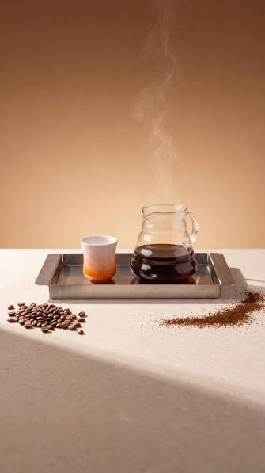

Batch Brew
Batch brew, or "batchie", is an automatic method of brewing coffee in large batches. Batch brewers are small appliances that heat the brew water and then disperse it over the top of the ground coffee, which is held in the filter inside the filter cone; the brew falls into a carafe held at the bottom of the machine.

Cold Brew
Cold brew is coffee brewed cold over a long period, typically 12–24 hours, and the result is a smooth, sweet, and almost acid-free cup. You don't need heat or special equipment to get started: just coarsely ground coffee, cold water, and a little patience. Here's our simple method, the right coffee-to-water ratio, and our recommendations for beans that truly shine when brewed cold.